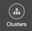
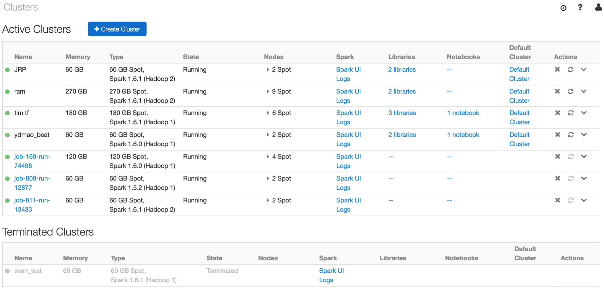
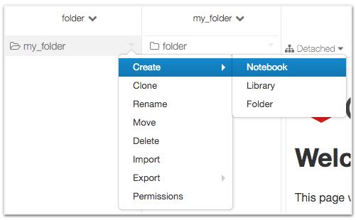
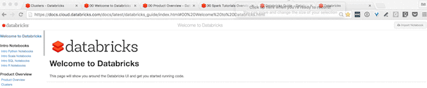
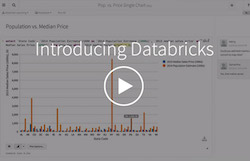

.svg)
%md ### **Getting Help** To get help at any time, click the question mark button at the top right-hand corner. 
Getting Help
To get help at any time, click the question mark button at the top right-hand corner.

Last refresh: Never
%md ## **Creating a Cluster** You'll need to create a Spark cluster to run code or import data into Databricks. We will now show you how to create one. Click on the Clusters Icon  from the main menu to begin. The Clusters page allows you to manage clusters.  * Admins have full access to launch, resize, and restart clusters. * Other users can still view the status of clusters and access the logs. #### **Add a New Cluster** * Click on  in the upper left corner. * Enter a unique name for the cluster, and the amount of worker nodes. * Tip: If adding a cluster fails, it could be that the existing clusters are using up the memory quota allocated to your account. You can find more information about clusters in the **[Clusters Documentation](01 Databricks Overview/01 Clusters.html)**.
Creating a Cluster
You'll need to create a Spark cluster to run code or import data into Databricks. We will now show you how to create one.
Click on the Clusters Icon  from the main menu to begin.
The Clusters page allows you to manage clusters.

- Admins have full access to launch, resize, and restart clusters.
- Other users can still view the status of clusters and access the logs.
Add a New Cluster
- Click on
 in the upper left corner.
in the upper left corner. - Enter a unique name for the cluster, and the amount of worker nodes.
- Tip: If adding a cluster fails, it could be that the existing clusters are using up the memory quota allocated to your account.
You can find more information about clusters in the Clusters Documentation.
Last refresh: Never
%md ## **Creating a Notebook** Click on the Workspace Icon  from the main menu to begin. Open the main menu, click on down arrow on the right side of **Workspace**, select a folder, and choose **Create > Notebook**.  The **Create Notebook** dialog will appear: * Enter a unique **name** for your notebook. * For **language**, click the drop down and choose **Python**. * For **cluster**, click the drop down and choose the cluster you had previously created.
Creating a Notebook
Click on the Workspace Icon from the main menu to begin.
Open the main menu, click on down arrow on the right side of Workspace, select a folder, and choose Create > Notebook.

The Create Notebook dialog will appear:
- Enter a unique name for your notebook.
- For language, click the drop down and choose Python.
- For cluster, click the drop down and choose the cluster you had previously created.
Last refresh: Never
%md ## Importing a Notebook There is one core way to import a notebook, either from your local machine or from a URL. Depending on your view, there will either be a `import notebook` button at the top right or a`clone notebook` at the top right of a given notebook page. You may have to scroll to the top of the page to see this button. Once you click that, you'll either be presented with a dialogue within your Databricks environment or be presented with a URL. Copy that URL to your clipboard and then navigate to your Databricks environment, select the `Import` link from any folder and import and run the notebook. 
Importing a Notebook
There is one core way to import a notebook, either from your local machine or from a URL. Depending on your view, there will either be a import notebook button at the top right or aclone notebook at the top right of a given notebook page. You may have to scroll to the top of the page to see this button.
Once you click that, you'll either be presented with a dialogue within your Databricks environment or be presented with a URL. Copy that URL to your clipboard and then navigate to your Databricks environment, select the Import link from any folder and import and run the notebook.

Last refresh: Never
%md ## **Using a Notebook** * Now that your notebook is created and attached to a cluster, you can run some example commands. * Note: to execute the command, type the script below and press **Shift+Enter** to execute it. #### **Predefined Variables** Notebooks pre-provision variables to allow users to simplify configuration management. Creating multiple contexts is not supported and can cause inconsistent behavior for end users. Our notebook environments come with predefined environment variables to allow users to quickly access the context they need. All variable names are the same regardless of the notebook language. | Description | Variable Name | | :---------: | :-----------: | | Spark Context | sc | | SQL Context / Hive Context | sqlContext | | SparkSession (2.0 Only) |spark| Creating multiple contexts is not supported within Spark and can cause inconsistent behavior. Use the existing contexts provided with the notebook. #### **Adding two numbers** Perform addition by typing the command into the cell.
Using a Notebook
- Now that your notebook is created and attached to a cluster, you can run some example commands.
- Note: to execute the command, type the script below and press Shift+Enter to execute it.
Predefined Variables
Notebooks pre-provision variables to allow users to simplify configuration management.
Creating multiple contexts is not supported and can cause inconsistent behavior for end users. Our notebook environments come with predefined environment variables to allow users to quickly access the context they need.
All variable names are the same regardless of the notebook language.
| Description | Variable Name |
|---|---|
| Spark Context | sc |
| SQL Context / Hive Context | sqlContext |
| SparkSession (2.0 Only) | spark |
Creating multiple contexts is not supported within Spark and can cause inconsistent behavior. Use the existing contexts provided with the notebook.
Adding two numbers
Perform addition by typing the command into the cell.
Last refresh: Never
%md #### **Create a DataFrame in Python** * Create the ``data`` RDD. * For more information on RDDs, please refer to [Spark Documentation > Quick Start](https://spark.apache.org/docs/latest/quick-start.html). * Create the ``df`` DataFrame from the ``data`` RDD. * Show the data using ``display()``. * Initially the result will be a table; click the  and choose **bar** chart.
Create a DataFrame in Python
- Create the
dataRDD.- For more information on RDDs, please refer to Spark Documentation > Quick Start.
- Create the
dfDataFrame from thedataRDD. - Show the data using
display().- Initially the result will be a table; click the
 and choose bar chart.
and choose bar chart.
- Initially the result will be a table; click the
Last refresh: Never
%md *** ##  **Where to Go Next** We've now covered the basics of Databricks, including creating a cluster and using notebooks. To learn more about the platform, watch the videos below, or visit the following pages: Practice the optional exercises below for more python exercises, look to the following notebooks in other languages, or go to the Databricks Product Overview. * [Notebook Tutorials in Scala](02 Tutorials/01 Intro to Scala.html) * [Notebook Tutorials in SQL](02 Tutorials/01 Intro to SQL.html) * [Notebook Tutorials in Python](02 Tutorials/01 Intro to Python.html) * [Notebook Tutorials in R](02 Tutorials/01 Intro to R.html) * [Databricks Product Overview](01 Databricks Overview/00 Product Overview.html) * [Accessing Data](03 Data Sources/0 Accessing Data.html) * [Using Jobs](01 Databricks Overview/06 Jobs.html) * [Spark Reference](https://spark.apache.org/docs/latest/)
Where to Go Next
We've now covered the basics of Databricks, including creating a cluster and using notebooks. To learn more about the platform, watch the videos below, or visit the following pages:
Practice the optional exercises below for more python exercises, look to the following notebooks in other languages, or go to the Databricks Product Overview.
Last refresh: Never
%md ## **Getting Started Videos** 1. Introducing Databricks https://vimeo.com/130273206 2. Cluster Manager and Jobs https://vimeo.com/156886719 3. Collaboration https://vimeo.com/156886720 4. Data Exploration https://vimeo.com/137874931 5. Data Visualization https://vimeo.com/156886721 | [Introducing Databricks](https://vimeo.com/130273206) | [Cluster Manager and Jobs](https://vimeo.com/156886719) | [Collaboration](https://vimeo.com/156886720) | [Data Exploration](https://vimeo.com/137874931) | [Data Visualization](https://vimeo.com/156886721) | |:---:|:---:|:---:|:---:|:---:| | [](https://vimeo.com/130273206) | [](https://vimeo.com/156886719) | [](https://vimeo.com/156886720) | [](https://vimeo.com/137874931) | [](https://vimeo.com/137874931) |
Getting Started Videos
- Introducing Databricks https://vimeo.com/130273206
- Cluster Manager and Jobs https://vimeo.com/156886719
- Collaboration https://vimeo.com/156886720
- Data Exploration https://vimeo.com/137874931
- Data Visualization https://vimeo.com/156886721
| Introducing Databricks | Cluster Manager and Jobs | Collaboration | Data Exploration | Data Visualization |
|---|---|---|---|---|
|  |
Last refresh: Never
Welcome to Databricks
This page will show you around the Databricks UI and get you started running code.
Last refresh: Never